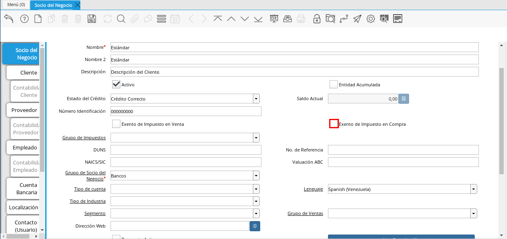

Registro de Socio del Negocio¶
En el menú de ADempiere, ubique y seleccione la carpeta “Relación con Socio del Negocio”, luego seleccione la carpeta “Reglas de Socios del Negocio” y finalmente seleccione la ventana “Socio del Negocio”.
Imagen 1. Menú de ADempiere
En esta ventana se registran los datos principales que la empresa requiere del socio del negocio cliente. Cada uno de los campos con el símbolo (*) son obligatorios para el registro.

A continuación visualizará la ventana “Socio del Negocio”, dónde debe seleccionar el icono de “Registro Nuevo” que se encuentra ubicado en la barra de herramientas de ADempiere.
Imagen 2. Ventana Principal Socio del Negocio

Proceda al llenado de los campos necesarios que a continuación se detallan.
Seleccione la organización en el campo “Organización”.
La organización le permite definir la entidad legal ó una sub-unidad a la cual pertenece el socio de negocio, si la organización es (*), este estará disponible para todas las organizaciones al procesar documentos y transacciones, pero si por el contrario, ha seleccionado una organización diferente, este registro únicamente estará disponible para la organización seleccionada.
Imagen 3. Campo Organización
Warning
Generalmente los Socios de Negocios son registros compartidos entre entidades organizacionales, por esta razón ERPyA recomienda la creación con organización (*) para evitar duplicidad e inconvenientes contables, de esta forma garantizamos la homogeneidad de los datos maestros.
Introduzca el código de socio del negocio en el campo “Código”.
El código es un dato único e irrepetible que protege la entrada de los registros, evitando la duplicidad de los mismos, generalmente se refiere al número de identificación que acredite la identidad de una persona natural una entidad jurídica, por ejemplo, una cédula de identidad o un RIF.
Note
Si no es ingresado un dato en este campo ADempiere genera un dato de tipo numérico autoincrementable.
Imagen 4. Campo Código
Warning
Se recomienda no ingresar caracteres especiales como puntos, guiones u otros que alteren el registro en este campo.
Seleccione el socio de negocio padre en el campo “Socio de Negocio Padre”.
El socio de negocio padre no es un campo obligatorio, sin embargo, es un campo que permite la agrupación de sub-entidades dependientes (socios de negocios hijos) de un socio de negocio, para explicarlo mejor veamos el siguiente ejemplo:
Imaginemos un proveedor de tipo cadena cuyo nombre es Cadena Única C.A, esta tendrá dos tiendas físicas, Cadena Unica Centro C.A y Cadena Única Oriente C.A respectivamente. Para este caso el Socio de Negocio Padre es Cadena Única C.A,quedando agrupado de forma que las dos tiendas serán hijas de Cadena Única C.A, de esta forma al emitir reportes financieros podríamos generarlos desde el Socio de Negocio Padre (Cadena Única C.A), agrupando todos los saldos de las tiendas por el padre ó podría generar los reportes únicamente por tienda.
Note
Generalmente esta opción es utilizada para franquicias, cadenas o corporaciones.
Introduzca el nombre del socio del negocio en el campo “Nombre”.
El nombre se refiere a la razón social, siendo esta el nombre ó la denominación con la que está registrado en los documentos legales, el nombre es utilizado a nivel administrativo, formal y jurídico.
Imagen 5. Campo Nombre
Introduzca el nombre 2 del socio del negocio en el campo “Nombre 2”.
El nombre 2 varía su uso dependiendo de la naturaleza del socio del negocio (Cliente, Proveedor o Empleado), si es un cliente o un proveedor es opcional, y generalmente se utiliza para colocar la denominación comercial, por el contrario, si es un empleado es obligatorio, siendo este campo correspondiente al apellido, el mismo será impreso en los reportes administrativos y jurídicos.
Imagen 6. Campo Nombre 2
Introduzca una breve descripción referente al socio del negocio cliente en el campo “Descripción”.
La descripción no es un campo obligatorio,sin embargo, le permite dejar descripciones o notas de interés para el registro.
Imagen 7. Campo Descripción
Seleccione el checklist “Entidad Acumulada”.
Entidad acumulada no es un campo obligatorio, sin embargo, le permite definir al socio del negocio como entidad sumaria, lo que significa que si el socio de negocio tiene este check activo será un Socio de Negocio Padre.
Imagen 8. Campo Entidad Acumulada
Seleccione en el campo “Estado de Crédito”.
El estado del crédito no es un campo obligatorio, sin embargo, le permite definir el comportamiento para la gestión del crédito del socio de negocio, actúa conjuntamente con el campo Saldo Actual y Límite de Crédito ubicado en la pestaña Cliente, este puede variar entre las siguiente opciones dependiendo de las necesidades:
Sin Verificación de Crédito: Establecido de forma manual, omite la evaluación para los socios de negocios a los que no se evalúa el crédito, equivalente a Sin límite de Crédito.
Crédito Correcto: Activa la gestión de crédito por estar dentro del límite de cŕedito.
Crédito Verificación: Es establecido de forma automática por ADempiere al evaluar el crédito, cuando el saldo actual está por encima del % de crédito en verificación (por defecto es 90%) del límite de crédito pero no alcanza el 100%.
Crédito Retenido: Es establecido de forma automática por ADempiere al evaluar el crédito, cuando el saldo actual está por encima del límite de crédito, bloqueando la posibilidad de completar ordenes de ventas, completar facturas y emitir entregas.
Crédito Detenido: Establecido de forma manual, bloqueando la posibilidad de completar ordenes de ventas, completar facturas y emitir entregas.
Imagen 9. Campo Estado de Crédito
Podrá visualizar el saldo actual que posee el cliente en el campo “Saldo Actual.
El saldo actual es un campo solo lectura, actualizado de forma automática, aumentando o disminuyendo al emitir cuentas por cobrar o cuentas por pagar, controlando el estado de crédito.
Imagen 10. Campo Saldo Actual
Podrá visualizar el número de identificación autogenerado a partir del campo Código en el campo “Número de Identificación”.
El número de identificación se refiere al número que acredita la identidad de una persona natural una entidad jurídica, por ejemplo, una cédula de identidad o un RIF, este campo mantiene incidencia en la generación de documentos fiscales como facturas, retenciones y comprobantes ARC.
Seleccione el checklist “Exento de Impuesto en Venta”.
Exento de Impuesto de Venta, no es un campo obligatorio, por defecto está establecido en falso, permite la omisión de impuestos al generar ordenes de ventas, es decir si un producto es gravado, hará una excepción para este socio de negocio, emitiendo la orden de venta con el producto en cuestión con impuesto (0%).
Imagen 11. Campo Exento de Impuesto en Venta
Seleccione el checklist “Exento de Impuesto en Compra”, para definir al socio del negocio como exento de impuesto.
Exento de Impuesto de Compra, no es un campo obligatorio, por defecto está establecido en falso, permite la omisión de impuestos al generar ordenes de compras, es decir si un producto es gravado, hará una excepción para este socio de negocio, emitiendo la orden de compra con el producto en cuestión con impuesto (0%).

Imagen 12. Campo Exento de Impuesto en Compra
Seleccione el grupo de impuestos en el campo “Grupo de Impuestos”.
Imagen 13. Campo Grupo de Impuestos
Introduzca el código DUNS del socio del negocio en el campo “DUNS”.
El código DUNS no es un campo obligatorio, sin embargo, le permite introducir el número DUNS (Data Universal Numbering System o Sistema Universal de Numeración de Datos), el mismo es un un número de identificación proporciona la identidad única a cada empresa a nivel internacional.
Imagen 14. Campo DUNS
Introduzca el número de referencia socio del negocio en el campo “No. de Referencia”.
El número de Referencia no es un campo obligatorio, sin embargo, le permite introducir un número fijo que utiliza el socio de negocio para gestiones administrativas, este tiene incidencia en las órdenes de compra o venta dependiendo la naturaleza de la entidad, siendo establecido de forma automática en las mismas.
Imagen 15. Campo No. de Referencia
Introduzca el código NAICS o SIC del socio del negocio en el campo “NAICS/SIC”.
El código NAICS/SIC no es un campo obligatorio, sin embargo, le permite introducir el código NAICS (American Industry Classification System ó Sistema de Clasificación Industrial de América del Norte), este es un código utilizado en los Estados Unidos, Canadá y México para clasificar la industria y actividades económicas.
Imagen 16. Campo NAICS/SIC
Introduzca la valuación ABC en el campo “Valuación ABC”.
La valuación ABC no es un campo obligatorio, sin embargo, le permite establecer una evaluación clasificatoria del socio de negocio cliente.
Imagen 17. Campo Valuación ABC
Seleccione el grupo de socio del negocio en el campo “Grupo de Socio del Negocio”.
El grupo de Socio del Negocio, permite categorizar sus socios de negocio de una forma específica, lo cual es eficiente a la hora de emitir asientos contables y reportes, para entenderlo mejor veamos el siguiente ejemplo:
Imaginemos que tenemos una cartera de clientes que manejan diferentes monedas, para categorizar de forma específica sería: Clientes Nacionales y Clientes Internacionales, de esta forma podría emitir reportes de cuentas por cobrar para clientes nacionales e Internacionales respectivamente.
Adicionalmente, define en el socio de negocio funciones y parámetros a partir de la categoría, entre las que se encuentran:
Impresión a Color: Define el color con los que serán mostrados en el arbol.
Info Confidencial: Permite ingresar información confidencial en solicitudes Web.
Lista de Precios Venta: Define lista de precios empleada en ordenes de venta y factura de cuentas por cobrar.
Lista de Precios Compra: Define lista de precios empleada en ordenes de compra y factura de cuentas por pagar.
Esquema de Descuento OV: Define esquema de descuento empleado en ordenes de venta y factura de cuentas por cobrar.
Esquema de Descuento OC: Define esquema de descuento empleado en ordenes de compra y factura de cuentas por pagar.
Porcentaje de Crédito en Verificación de Cliente: Define el porcentaje de crédito disponible para la evaluación del crédito previo a que un socio de negocio pase de crédito correcto a crédito en verificación.
Porcentaje de Tolerancia OC/Factura: Define el porcentaje de diferencia que puede existir entre el precio de la orden de compra y el precio de la factura de cuentas por pagar, porcentaje de holgura con el cual podría ser completados estos documentos sin pasar por el flujo de aprobación.
Contabilidad: Define cuentas contables en la que se realizarán los asientos contables dependiendo de la naturaleza del socio de negocio (Clientes o Proveedores).
Imagen 18. Campo Grupo de Socio del Negocio
Seleccione el tipo de cuenta en el campo “Tipo de Cuenta”.
El tipo de cuenta no es un campo obligatorio, sin embargo, le permite a los vendedores conocer con perfección las características de sus clientes y los diferentes tipos de clientes definidos en la empresa y así realizar un mejor estudio de mercado.
Imagen 19. Campo Tipo de Cuenta
Seleccione el lenguaje en el campo “Lenguaje”.
El lenguaje no es un campo obligatorio, sin embargo, define el idioma con que será impreso los formatos de impresión asociados a este Socio de Negocio.
Imagen 20. Campo Lenguaje
Seleccione el tipo de industria en el campo “Tipo de Industria”.
El tipo de industria no es un campo obligatorio, sin embargo, define la tipología de industria en la que se encuentra el Socio de Negocio.
Imagen 21. Campo Tipo de Industria
Seleccione el segmento en el campo “Segmento”.
El segmento no es un campo obligatorio, sin embargo, permite segmentar socios de negocios de manera rigurosa, identificar patrones que pueden ser usados para asignar un segmento.
Imagen 22. Campo Segmento
Seleccione el grupo de ventas en el campo “Grupo de Ventas”.
El grupo de ventas no es un campo obligatorio, sin embargo, permite categorizar al socio de negocio en un grupo de venta con objetivos referente a marketing y promociones.
Imagen 23. Campo Grupo de Ventas
Introduzca la dirección de la página web en el campo “Dirección Web”.
La dirección Web no es un campo obligatorio, sin embargo, permite registrar el sitio web del socio del negocio (Cliente y Proveedores) en el cual se administra la información de contacto de la empresa para solucionar sus inquietudes, realizar compras y gestión de solicitudes, aprovechando oportunidades de negocio que se encuentran en la red.
Imagen 24. Campo Dirección Web
Seleccione el checklist “Prospecto Activo”.
Prospecto Activo no es un campo obligatorio, por defecto está establecido en falso, sin embargo al seleccionarlo indica que el socio de negocio de tipo cliente está activo.
Imagen 25. Campo Prospecto Activo
Seleccione la opción “Liga Organización”, para ejecutar el proceso.
El proceso liga organización es ejecutado para los casos en los que la organización en gestión requiere generar documentos o solicitudes que son cubiertas por otra organización, para entenderlo mejor veamos el siguiente ejemplo:
Imaginemos que tenemos una organización (Inversión del Norte) donde existe un proveedor Inversión del Sur C.A, este es ligado a la organización Inversión del Sur.
Cuando Inversión del Norte emite una orden de compra configurada para emitir contra documento con el proveedor Inversión del Sur C.A, es emitida una orden de venta para Inversión del Norte que satisface la orden de compra.
Para ejecutar este proceso debe tomar en cuenta los siguientes parámetros:
Organización Existente: Seleccione una organización existente, si el campo queda vacío, se creará una organización con el nombre del socio de negocio de forma automática.
Tipo de Organización: Seleccione tipo de organización previa definición.
Límite de Acceso al Rol: Seleccione un rol existente si desea que sólo un rol específico tenga acceso a esta organización, si el campo queda vacío, el rol ClientAdmin y ClientUser tendrán acceso a esta organización.
Seleccione la opción OK y será ejecutado el proceso.
Note
Las configuraciones por límite de acceso a rol es modificable desde los roles.
Imagen 26. Campo Liga Organización
Warning
La organización puede ser ligada únicamente a un socio de negocio, para corregir un error en la asignación de la organización, ejecute el proceso: Desliga de Socio de Negocio a organización.
Introduzca el valor de ingresos en el campo “Valor Esperado”.
El valor esperado no es un campo obligatorio, sin embargo, permite ingresar un monto informativo de la rentabilidad esperada, basada en una estimación ingresos de un cliente.
Imagen 27. Campo Valor Esperado
Podrá visualizar el valor total de transacciones que posee el cliente en el campo “Valor Total Transacciones”.
El valor total transacciones es un campo solo lectura, actualizado de forma automática, sumando cada ingreso generado por este cliente, el mismo permite evaluar la rentabilidad de un cliente potencial.
Imagen 28. Campo Valor Total Transacciones
Introduzca el costo de adquisición en el campo “Costo de Adquisición”.
El costo de adquisición no es un campo obligatorio, sin embargo, permite registrar el monto total correspondiente al costo generado para lograr convertir un prospecto a cliente.
Imagen 29. Campo Costo de Adquisición
Introduzca la cantidad de empleados en el campo “Empleados”.
Empleados no es un campo obligatorio, sin embargo, le permite evaluar la cantidad de empleados de una empresa prospecto, funge como un dato informativo para ser utilizada en cotizaciones por ejemplo.
Imagen 30. Campo Empleados
Introduzca el porcentaje de participación en el campo “Participación”.
La participación no es un campo obligatorio, sin embargo, le permite mantener el control porcentualmente de la proporción obtenidas de las compras del cliente en la producción o distribución de productos o servicios.
Esto puede generar fidelización del cliente, dando la oportunidad de evaluar promociones y descuentos para aquellos clientes en los cuales su participación sea alta, y a su vez, mayor oportunidad en el aumento de la cartera de cliente creando programas para ventas cruzadas y sugestivas, comercializando así más productos y servicios.
Imagen 31. Campo Participación
Introduzca el número de ventas total en el campo “Volumen de Ventas”.
El volumen de ventas no es un campo obligatorio, sin embargo, permite registrar el número de ventas efectivas de un cliente, estas cifras generalmente son auditadas en reuniones directivas para evaluar la rentabilidad y expansión del negocio o si por el contrario sus ventas disminuyen.
Adicionalmente este datos es producto de supervisión para controlar volumen de ventas en comparación a pronósticos de ventas, estableciendo una estimación de cantidades mínimas a vender para mantener un equilibrio en la organización.
Imagen 32. Campo Volumen de Ventas
Introduzca la fecha de la primera venta en el campo “Primera Venta”.
La primera venta no es un campo obligatorio, sin embargo, permite registrar la fecha de la primera venta de forma informativa, útil para evaluar descuentos y promociones por aniversarios.
Imagen 33. Campo Primera Venta
Seleccione el check “Entrega Directa”.
El check entrega directa no es un campo obligatorio, sin embargo, permite registrar el socio de forma informativa, útil para generar reportes e indicar que los envíos de las notas se envían del vendedor directamente al cliente.
Imagen 34. Check Entrega Directa
Seleccione el tipo de persona en el campo “Tipo de Persona.
El tipo de persona se refiere a la forma legal como está está constituida una organización, entre las cuales tenemos las siguientes opciones:
Jurídica Domiciliada: Persona Jurídica Domiciliada es una empresa constituida dentro del territorio nacional, que cumple sus obligaciones y resguarda la empresa con su patrimonio.
Jurídica No Domiciliada: Persona Jurídica No Domiciliada es una empresa constituida fuera del territorio nacional, que cumple sus obligaciones y resguarda la empresa con su patrimonio.
Natural Residente: Persona Natural Residente es una persona residente en el país que asume las obligaciones, responsabilidades y resguarda las obligaciones con patrimonio propio.
Natural No Residente: Persona Natural No Residente es una persona residente fuera del país, que asume las obligaciones, responsabilidades y resguarda las obligaciones con patrimonio propio.
Imagen 35. Campo Tipo de Persona
Adjunte el logo de la empresa en el campo “Logo”.
El logo no es un campo obligatorio, sin embargo permite guardar logotipos de socios de negocios.
Imagen 36. Campo Logo


Seleccione el icono “Guardar Cambios” ubicado en la barra de herramientas para guardar los datos ingresados.
Imagen 37. Icono Guardar Cambios

Warning
Recuerde guardar el registro de los campos cada vez que se vaya a posicionar en una pestaña de la ventana socio del negocio.